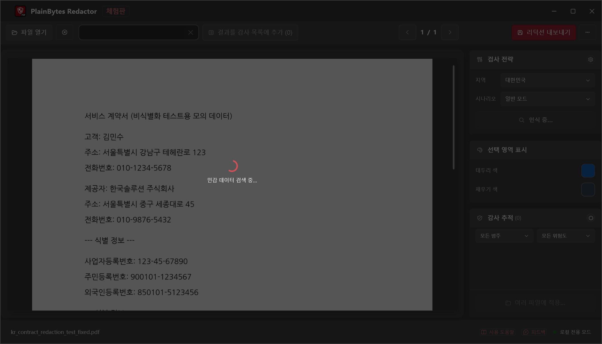
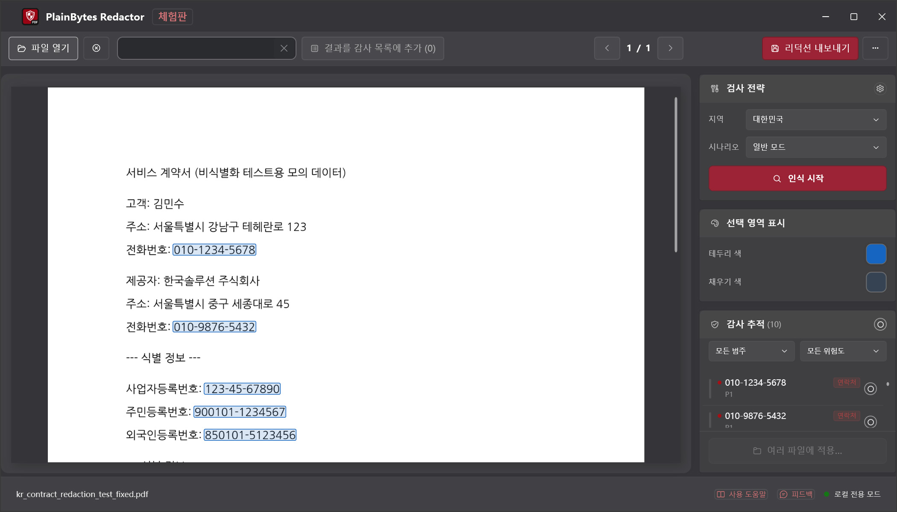
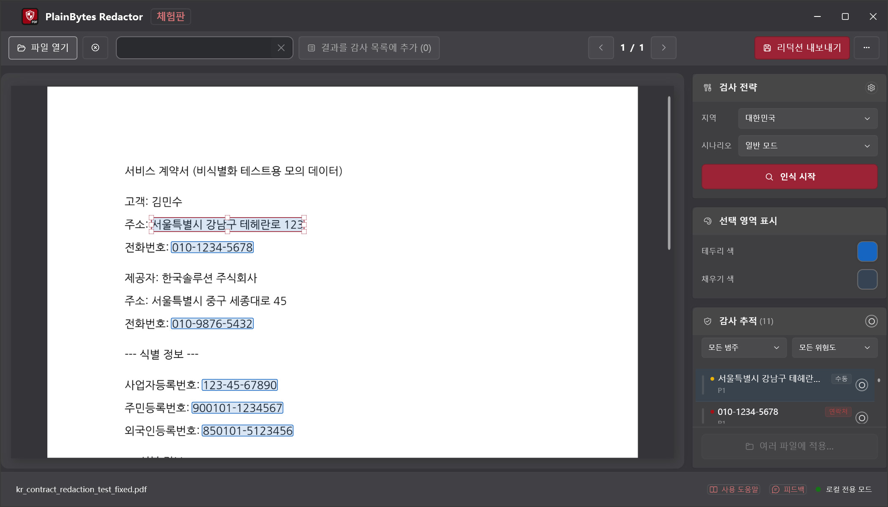
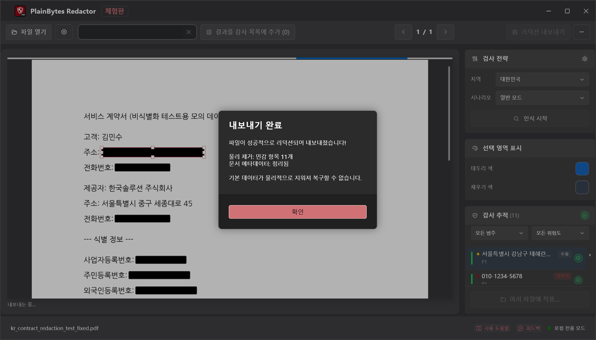

01
열기 및 스캔
PDF를 불러와 해당 지역 형식으로 탐지를 실행합니다.
PlainBytes Redactor
PlainBytes Redactor는 전부 사용자 PC에서 실행됩니다. 클라우드 업로드 없음, AI 서비스가 파일을 보지 않습니다. 28개국 식별자 형식 자동 탐지와 내보내기 전 수동 검토를 지원합니다.
10일 전 기능 무료 체험 · 일회성 구매 · 구독 없음
작동 방식

PDF를 불러와 해당 지역 형식으로 탐지를 실행합니다.

위험 범주와 함께 표시된 모든 항목을 확인합니다.

확정 전에 추가·삭제·미세 조정이 가능합니다.

콘텐츠와 메타데이터가 영구적으로 제거됩니다.
대부분의 비식별화 도구, 특히 AI 기반 도구는 민감 정보를 찾아 제거하기 전에 문서를 서버에 업로드합니다. 비밀 유지, 특권, 감사 독립성 규칙에 묶인 사람에게 파일 하나를 비식별화하기 위해 그런 위험을 감수할 필요는 없습니다.
PlainBytes Redactor는 탐지와 처리를 모두 사용자 기기에서 수행합니다. 파일은 PC를 떠나지 않으며, 계정·동기화·서버가 필요 없습니다.
컴플라이언스
주요 데이터 보호 프레임워크에 부합하는 로컬 우선 아키텍처——처리 중 제3자 데이터 전송 없음.
개인정보의 안전한 관리 및 파기 요건을 지원합니다. PDF 콘텐츠 스트림에서 개인정보를 완전히 삭제하며, 처리 중 제3자로의 데이터 전송이 일절 발생하지 않습니다.
개인정보 안전관리정보통신서비스 환경에서의 개인정보 보호 요건을 지원합니다. 완전한 로컬 처리 방식으로 개인정보가 외부 서버로 전송되지 않아 무단 접근 위험을 원천 차단합니다.
정보보안 강화개인정보 보호는 제품 설계 단계부터 핵심 원칙으로 내재화되어 있습니다. 로컬 처리, 물리적 데이터 삭제, 클라우드 비의존 설계를 통해 「설계 단계부터의 개인정보 보호」 원칙을 실현합니다.
설계 단계 보호 원칙참고: PlainBytes Redactor는 개인정보 보호 관련 업무 흐름을 지원하기 위해 설계된 도구입니다. 법률 자문을 구성하지 않으며, 제3자 기관의 공식 인증은 취득하지 않았습니다.
변호사용
전자 제출이나 디스커버리 공유 전에 SSN, 재무 정보 및 기타 PII를 비식별화합니다. 고객 파일을 제3자 클라우드로 보내지 않습니다.
회계사용
감사 조서, 세무 신고 또는 연말 보고서를 공유하기 전에 계좌 번호, SSN 및 고객 재무 정보를 비식별화합니다. 고객 데이터를 제3자 클라우드로 보내지 않습니다.
HR 팀용
감사인, 법무 담당자와 공유하거나 데이터 요청에 응답하기 전에 채용 제안서, 퇴직 기록 또는 인사 파일에서 급여, SSN 및 개인 정보를 비식별화합니다.